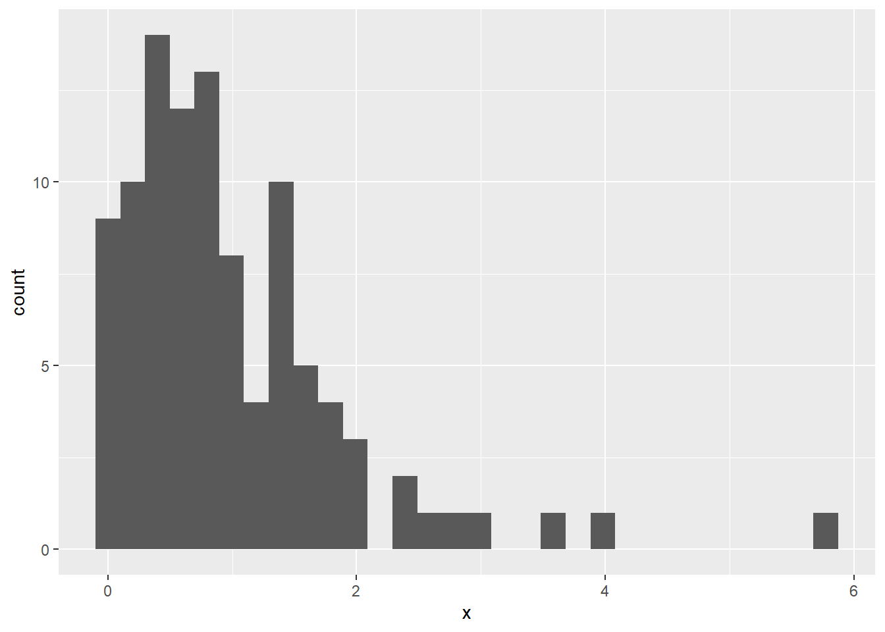

Chapter 3 Sampling Distributions and the CLT
Sampling distributions are theoretical objects that represent the probability distribution of a statistic (usually the sample mean).
The sampling distribution of the sample mean is the theoretical distribution of means that would result from taking all possible samples of size \(n\) from the population.
We can build some intuition for what this means in R by simulating this sampling distribution.
Let’s start by assuming that we are sampling from the normal distribution with mean \(\mu=0\) and variance \(\sigma^2=1\) such that observations in our sample are IID. A specific sample of size \(n\) then is going to consist of realizations \(\{x_1,\dots,x_n\}\), where each \(x_i\) is a realization of the random variable \(X_i \sim N(0,1)\).
In R, we now can take a sample of size \(n=100\) by simulating draws from the normal distribution. For this sample, we then also compute the mean defined by \(\frac{1}{n}\sum_{i=1}^n x_i\) and plot the distribution of the realizations \(\{x_1,\dots,x_n\}\) in a histogram.
x = rnorm(n=100, mean=0, sd=1)
mean(x)## [1] -0.08761556ggplot(data.frame(x),aes(x)) + geom_histogram() 
# note: to plot the vector with ggplot, we convert x to a data.frame firstWhile we cannot generate all possible samples of size \(n\) from this normal distribution to get the sampling distribution, we can many sample and get close to it.
Let \(R=100,000\) be the number of samples we want to generate. The code below now constructs a for loop in R to do the following: (1) generate a random sample of size \(n\) from the population; (2) compute the sample mean and store the computed mean in a vector called xbar.
R = 100000
xbar = double(R)
for(r in 1:R){
x = rnorm(n=100, mean=0, sd=1) # generate new sample
xbar[r] = mean(x) # calculate mean and ad it in vector xbar
}
ggplot(data.frame(xbar),aes(xbar),xtitle="mean in sample") +
geom_histogram(title="Sampling distribution") +
ggtitle("Sampling distribution") +
xlab("Sample means")
This plot is the distribution of sample means after taking \(R=100,000\) samples with size \(n=100\) from the population.
Notice that this again looks like a normal distribution. The mean looks the same as in the first histogram within a single sample, but the variance looks much smaller.
In fact, when the population distribution is \(N(\mu,\sigma^2)\), then the distribution of \(\bar{X}=\frac{1}{n}\sum_{i=1}^nX_i\) is \(N(\mu,\sigma^2/n)\). In this case, we know that \(E(\bar{X})=E(X)=\mu=0\) and \(Var(\bar{X})=Var(X)/n=\sigma^2/n=1/100=0.01\).
Let’s check to see what the mean and variance are in our approximation of the sampling distribution.
mean(xbar)## [1] 4.686235e-05var(xbar)## [1] 0.01002268Very close to the true values!
The next question to consider is what if our population distribution was not normally distributed? What if it was skewed to the right or left?
Let’s assume \(X_i\) has a Exponential\((\beta)\) distribution where \(\beta=1\) is a rate parameter. We can again take one individual sample \({x_1,\dots,x_n}\).
x = rexp(n=100, rate=1) # take draws
ggplot(data.frame(x),aes(x)) + geom_histogram() 
Based on this sample, it appears that distribution is highly asymmetric and skewed to the right.
In this case, should we still expect the sampling distribution of the sample mean to be normal? Let’s go through the same exercise as before, i.e. take many samples of size \(n=100\), compute the sample mean for each of the samples, and then plot the histogram of the sample means.
R = 100000
xbar = double(R)
for(r in 1:R){
x = rexp(n=100, rate=1)
xbar[r] = mean(x)
}
ggplot(data.frame(xbar),aes(xbar),xtitle="mean in sample") +
geom_histogram(title="Sampling distribution") +
ggtitle("Sampling distribution") +
xlab("Sample means")
The distribution of sample means again looks normal!
The Central Limit Theorem guarantees that this will be the case as the sample size \(n\) gets large. Then for any population distribution, we know that the distribution of \(\bar{X}\) will be approximately normal with mean \(E(\bar{X})=E(X)\) and \(Var(\bar{X})=Var(X)/n\).
Since \(X\sim\text{Exponential}(\beta)\) with \(\beta=1\), it can be shown that \(E(X)=\beta=1\) and \(Var(X)=\beta^2=1\). Therefore, \(\bar{X}\) is approximately normal with mean \(E(\bar{X})=E(X)=1\) and variance \(Var(\bar{X})=Var(X)/n=1/100=0.01\).
We again check these results using our approximate sampling distribution and find consistent answers.
mean(xbar)## [1] 1.000008var(xbar)## [1] 0.009936316